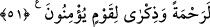

hayrın önünü açan Fettâh’tır. Sabahı yarıp çıkaran, güneşi yaratan O’dur.
50. “Ona Rabbinden (başkaca) mucizeler indirilmeli değil miydi?” derler. De ki:
Mucizeler ancak Allah’ın katındadır. Ben ise sadece apaçık bir uyarıcıyım.
Kureyş “Ona” Muhammed (s.a)’e “Rabbinden” Sâlih’in devesi, Mûsa’nın asâsı, Îsa
(a.s.)ın sofrası gibi “(başkaca) mucizeler indirilmeli değil miydi?” derler.
“__WORD__, şöyle olmalı değilmiydi, anlamına gelen bir teşvik edatıdır.
De ki: Mucizeler ancak Allah’ın katındadır.” Yâni bu âyetler, Allah katındandır,
O’nun kudretine ve hikmetine delâlet ederler ve O, onları dilediği şekilde indirir.
Benim elimde bir şey yoktur ki, teklif ettiğiniz şekilde indireyim.
“Ben ise sadece apaçık bir uyarıcıyım.” Benim işim, bana verilen âyetlerle Allah’ın
azâbından korkutmak, sakındırmak ve uyarmaktır. Yani, sizin anladığınız dil ile
korkuturum, demektir.
Keşfü’l-esrâr’da der ki: Peygamber (s.a.)’in, onların tekliflerine icâbet
etmemesindeki hikmet, bu durumun sonu gelmeyen isteklere sebep olacağından
dolayıdır. Çünkü onlar, îmana zorlayacak âyetler istediler. Bu defa îman etmeseler,
(eski ümmetlerde olduğu gibi) kökleri silinecekti. Böyle azâb ise, Peygamber (s.a.)’in
duâsı hürmetine, bu ümmetten kaldırılmıştır.
Sonra Allah Teâlâ, onların tekliflerinin bâtıl oluşunu beyânla buyurdu ki:
51. Kendilerine okunmakta olan Kitab’ı sana indirmemiz onlara yetmemiş mi?
Elbette îman eden bir kavim için onda rahmet ve ibret vardır.
“Kendilerine okunmakta olan Kitab’ı sana indirmemiz onlara yetmemiş mi?” Biz
sana, önceki semâvî kitapları tasdik eden ve hakkı dile getiren kitabı, Kur’ân’ı indirdik.
Sen onu, öğrenim ve müzâkere yolu ile almaktan uzaktın. O her zaman ve her yerde
onların dili ile okunacak, yanlarında sâbit bir âyet olarak kalacak, devam edecek ve
sönmeyecektir. Daha önceki kitaplar ise zaman ve mekânla sınırlı idi, hükmü geçtikten
sonra yürürlükten kaldırılmışlardı ve asılları yok olmuştu.
Âyet, onların kalblerinin körlüğüne işâret eder. Şöyle ki, apaçık âyet olan Kur’ân’ı
göremeyip Rasûlullah (s.a.)’den başkaca âyet ve mucizeler istemişlerdi. Ve yine okuma-
yazma bilmeyen birine Kur’ân gibi bir kitabın okunuşunun kolaylaştırılışını, ona
indirilişini, onda hıfzedilişini ve beyânın ona havâle edilişini görememişler ve bu